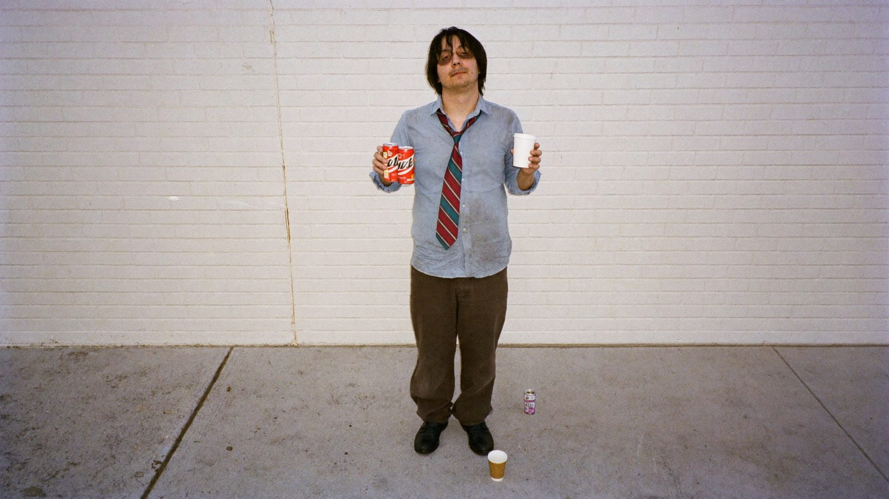
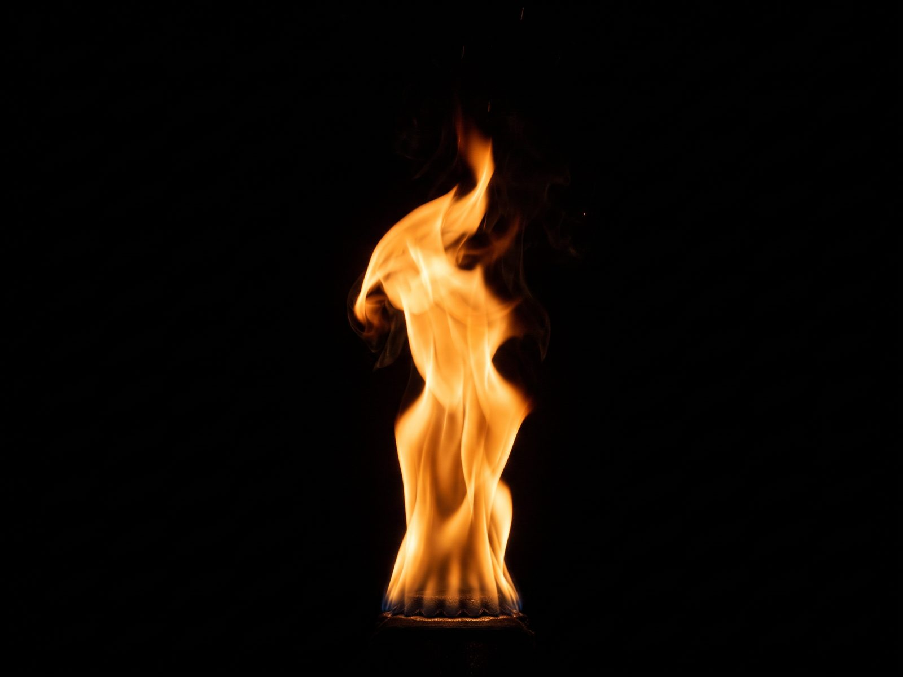
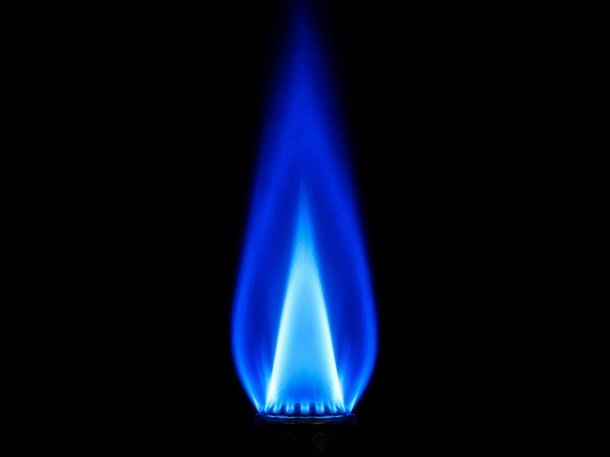
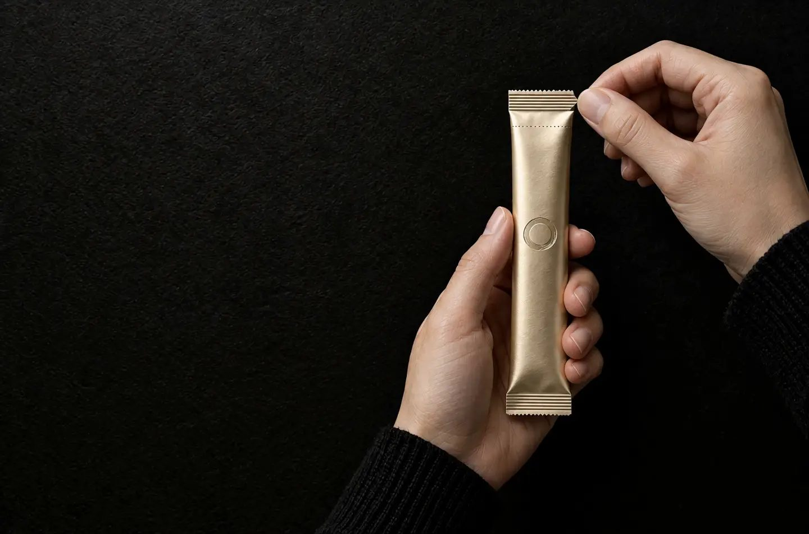

Back in the day
- 이 모든 건 어디서 시작됐나?
- Founder: 큰 발표를 10분 앞둔 오후였다. 심장은 뛰는데 머리는 텅 비어 있었다. 손에 쥔 건 커피 한 잔 더, 에너지드링크 한 캔 더. 잠깐 올라갔다가 더 깊이 떨어졌다. 둘러보니 모두가 그랬다. 시험 전날에도, 경기 직전에도, 무대 뒤에서도.
에너지를 미래에서
빌려 쓰지 않는다.

Pause.
세 번째 커피, 빨라진 심장, 텅 빈 머리. 빌려온 기로 큰 순간을 겨우 버티고, 그 값은 오늘 밤 이자까지 붙어 돌아온다. ONEKI는 빌리지 않는다. 이미 내 안에 있는 기(氣)를 깨운다. 톡.
“어디로 가는지 알려면, 어디서 왔는지 알아야 한다.”
그래서 우리는 ONEKI가 시작된 자리, 중요한 순간을 앞두고 기가 흩어지던 그때로 돌아가 이 브랜드를 시작한 사람에게 물었다.
One Ki흩어진 기를 하나로
元氣소리 내어 읽으면 원기
Key잠긴 순간을 여는 열쇠
一圓相한 번의 붓질로 그린 원


Breathe in.
가스레인지를 켜 보라. 붉은 불꽃은 요란하지만 온도가 낮고, 파란 불꽃은 조용하지만 더 뜨겁다. 에너지도 그렇다. 세상의 에너지는 대부분 요란하게 타오르고, 빨리 사그라든다. 우리는 반대로 간다. 조용히 시작해, 필요한 순간에 불을 붙인다. ONEKI는 블루 에너지라는 이름의 첫 줄에 서려 한다.
이름이 불리기 30초 전.

Snap.
누군가 방금,
자기 순간을
시작했다.
톡. 스틱이 꺾이는 소리는 우리가 파는 가장 작은 제품이자, 가장 큰 약속이다. 꺾는 건 스틱이고, 트이는 건 기다.
Breathe out.
차분함은 목적이 아니다. 끝까지 미치기 위한 준비다.
calm burns hotter.
red energy borrows. blue builds.
nerves are fuel. not fear.
떨린다는 건, 중요하다는 뜻이다.
caffeine is a loan. ki is a savings account.
일러스트로 만든 목소리입니다. 런칭 후 실제 ONEKI 게스트의 목소리와 사진으로 바뀝니다.
Our 10-Year Vision
BHAG: Big Hairy Audacious Goal